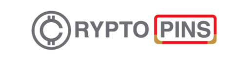

<div>
    <div id="mySidenav" class="sidenav" ref="sidenav">
        <a href="javascript:void(0)" class="cross" @click="closeNav">&times; </a>
        <router-link to="/app/tickets" class="no-border">Tickets</router-link>
        <router-link to="/app/buyins" class="no-border">Buyins</router-link>

    </div>
    <vs-row vs-w="12" class="nav-container full-height">
        <vs-col class="full-height" vs-type="flex" vs-justify="flex-start" vs-align="center" vs-lg="1" vs-sm="2" vs-xs="2" vs-w=''>
            <Icon class="navicon-custom" type="navicon" @click.native="openNav"></Icon>
        </vs-col>
        <vs-col class="logo full-height" vs-type="flex" vs-justify="flex-start" vs-align="center" vs-lg="10" vs-sm="8" vs-xs="8">
            <vs-row vs-w="12" class="full-height">
                <vs-col class="full-height" vs-type="flex" vs-justify="flex-start" vs-align="center" vs-lg="6" vs-sm="12" vs-xs="12">
                    CRYPTOPINS
                </vs-col>
                <vs-col class="full-height" vs-type="flex" vs-justify="space-evenly" vs-align="center" vs-lg="6" vs-sm="0" vs-xs="0">
                    <router-link class="router-link" to="/app/tickets">Tickets</router-link>
                    <router-link class="router-link" to="/app/buyins">Buyins</router-link>
                </vs-col>
            </vs-row>
        </vs-col>
        <vs-col class="full-height" vs-type="flex" vs-justify="center" vs-align="center" vs-lg="1" vs-sm="2" vs-xs="2">
            <Poptip title="" content="content" placement="bottom-end">
                
                <Icon v-if="!user.img" class="profile-img" type="person"></Icon>
                <div slot="content">
                    <div class="profile-select" @click="navigateTo('admin')">
                        <Icon type="lock-combination"></Icon>
                        <span>Admin</span>
                    </div>
                    <div class="profile-select" @click="navigateTo('settings')">
                        <Icon type="settings"></Icon>
                        <span>Settings</span>
                    </div>
                    <div class="profile-select" @click="logout">
                        <Icon type="log-out"></Icon>
                        <span>Logout</span>
                    </div>
                </div>
            </Poptip>
        </vs-col>
    </vs-row>
    <div>
        <vs-row vs-w="12">
            <!-- <vs-col class="padding side-nav transition" vs-type="flex" vs-justify="flex-start" :vs-align="align" :vs-lg="width" vs-sm="2"
                vs-xs="2">
                <div>
                    <router-link to="/tickets">
                        
                    </router-link>
                    <!-- <span>Hello</span> -->
            <!-- </div>
                <div> -->
            <!-- <router-link to="/buyins">
                        <Icon class="navicon-custom" type="navicon"></Icon>
                    </router-link> -->
            <!-- <span>Hello</span> -->
            <!-- </div>
            </vs-col> -->
            <vs-col class="grey-background content transition padding" vs-type="flex" vs-justify="center" vs-align="center" :vs-lg="12"
                :vs-sm="12" :vs-xs="12">
                <router-view></router-view>
            </vs-col>
        </vs-row>
    </div>
</div>